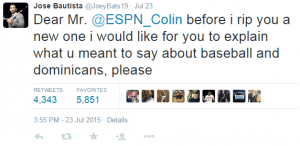
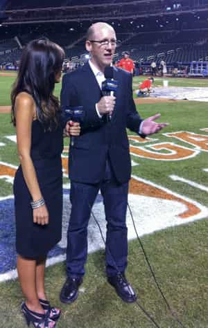

< < < Back
Another Overreaction Over Race Leads To The Dismissal Of ESPN’s Colin Cowherd – Return Of Kings
On Friday afternoon, ESPN announced that their #1 radio talk show host, Colin Cowherd, would be taken off the air because of his comments regarding the educational system in the Dominican Republic. They mistakenly listened to the outraged masses who took his comments as a racial slur demeaning the intelligence of Major League Baseball players that hail from the small country in the Caribbean.
Here’s how it happened:
Thursday morning as I was driving to a local 7-Eleven listening to The Herd with Colin Cowherd on ESPN Radio when the host, Colin Cowherd, dropped this little nugget:
It’s baseball. You don’t think a general manager can manage? Like it’s impossible? The game is too complex? I’ve never bought into that, ‘Baseball’s just too complex.’ Really? A third of the sport is from the Dominican Republic. The Dominican Republic has not been known in my lifetime as having world-class academic abilities. A lot of those kids come from rough backgrounds and have not had opportunities academically that other kids from other countries have.
As soon as he said it I chuckled to myself: “Well that’s gonna piss a few people off.” But after that I never gave it a second thought because a) Cowherd was already on his way out having signed a new contract with Fox Sports and just playing out the string with ESPN and b) I knew he didn’t insult anybody.
Well I was wrong about the latter. Usually I can see faux outrage coming but this one blindsided me to be sure. The first person to stoke the flames of Colin’s “racist rant” was Toronto Blue Jays Outfielder, Jose Bautista who is Dominican.

What followed was the usual incredulous overreaction to a comment that was not only not racist, but 100% true. The Dominican Republic does have a shitty educational system, and Cowherd simply pointed out that if Dominican players who come to this country with fifth grade educations can dominate baseball, then baseball isn’t as complex as these so-called baseball “purists” would lead you to believe. It’s as simple as that.
Cowherd was back on the air on Friday and addressed the controversy head on, as is his M.O. He stated that a number of people had reached out to him for clarification of his comments the day before including ESPN Columnist and television personality, Israel Gutierrez, who is of Dominican descent.
https://www.youtube.com/watch?v=TYeplpTZhDQ
He even called on Jose Bautista himself to come on air with him to discuss the issue with him directly. I wasn’t able to listen to the whole program but as far as I know, neither Gutierrez or Bautista made an appearance on The Herd. That didn’t stop Cowherd from clarifying his remarks on air:
…I don’t think I should be defined by 16 seconds of a minute rant edited on a site owned by a blog company currently in a hundred million dollar law suit for airing improprer audio and video tape…
…I’m not here to double down. But I think I have a right to run the entire tape.
…can we stop with the “I don’t get the sport because it’s too complex?”
…I don’t think I have to be Steven Hawking to understand baseball
He later added that sometimes his tone stinks and that he gets that. But he clarified that we are lucky to be in America, whereas Dominicans are unlucky to hail from a country with economic strife which creates educational hurdles.
There isn’t so much as a hint of a racial undertone in his narrative, yet, headlines from sea to shining sea read “Cowherd fired because of racist comments about Dominicans.”
The difference between “uneducated” and “stupid”
The sad truth is that people throw around the word racism any time anyone uses a group of people from a different race as an example to make a broader point. If I were white, and said that “black people aren’t as educated as white people in this country” there’s no doubt in my mind that I’d be met with the usual lynch mob calling me a racist and that I called black people stupid.
But if people would take a minute, read between the lines, and show some temperance in squeezing the race trigger, they’d realize that I didn’t call black people stupid, but rather said they are simply less educated.
And therein lies the disconnect. There is a huge difference between uneducated and stupid. A college degree doesn’t make someone smart anymore than the lack of a degree makes one stupid.

Having this doesn’t make you smart
Case in point: I worked for a mattress company in Atlanta before coming west. My job was to drive a 24′ box truck and drop mattresses off at various warehouses around the city. The man I worked for was nothing short of brilliant. His business acumen, attention to detail, and rock solid frame earned my respect very quickly. To this day, I’ve never worked for anyone as smart as this guy.
His education level? He dropped out of high school after his sophomore year and never went back for his GED.
I’m a pretty sharp guy who went to college and fashion myself a pretty intelligent individual, and it has nothing to do with my education. I still don’t hold a candle to the high school dropout I worked for in the ATL. Not even close.
The point is that Cowherd didn’t call Dominicans dumb, he called them uneducated. There is a difference. SJWs should all be smart enough to know the difference before they stupidly start calling for people’s jobs.
The truth hurts
It’s silly that SJWs and Dominicans have lost their minds over a statement that rings true. Forney recently pointed out that remarks don’t piss people off unless there’s a measure of truth to that statement:
if you feel shamed over something, it’s an indicator that whatever you’re being shamed for is something you hate about yourself and want to change.
The hard truth is the Dominican Republic ranks extremely low in educational ratings worldwide. They score extremely poorly on any objective measurement of education or human development, making Cowherd’s statement spot-on. People aren’t beating down the doors to the D.R. to get into any prestigious schools on the island, and that’s a fact.
American children will never have to attend class in a shipping container.
Dominicans are outraged and upset because they know Colin’s statement rings true. Yes, the poor economy presents educational challenges to Dominican residents. Yes, those challenges translate into Dominicans coming to the U.S. uneducated and yes, this means they don’t have the book smarts we have in the U.S.
All of this is true even if it seems impolite to point out and unfortunately for Cowherd he stepped into the truth landmine and it blew up in his face.
Can anyone be honest anymore?
It’s clear that pundits in this country can’t present truths without their statements being taken out of context and characterized as racist, sexist, or intolerant of the LGBTXYZABCLMNOP community. The “racist” trope even comes out when the person is not talking about a race!
The reason for is simple: They’re afraid of retribution by their corporate overlords. Nobody’s trying to get fired and lose those fat salaries and generous bonuses over a 30-second sound bite.
I touched on this very element a while back:
Now I understand that men in the media have to fall in line with the feminist agenda in public. Their livelihood depends on it.
…Feminism hadn’t infiltrated sports media on this level when most of the notable journalists, media members, and sports anchors started so I’m not going to pass judgment on men who have to toe the line in order to continue making a living.
Often leading the charge for these fake controversies is limp-wristed SJW pussy Craig Calcaterra, who regularly makes a name for himself (and trolls for page views) by white-knighting for all of the precious, blameless damsels in distress out there.
What else could you expect from a man parroting corporation-approved, equalist, feel-good pretty lies like these:
Anyone who simply says, out of hand, that there is no way a woman can play major league baseball competitively is just guessing. And, in all likelihood, voicing some level of prejudice, be it conscious or subconscious. Because the fact of the matter is we have no idea how women, in numbers, stack up. As Emma Span noted in her excellent New York Times piece back in June, girls and women are systematically steered away from playing baseball. The fact that a small handful play is neat, but it’s totally useless as a predictor for how they’d do if there was organized instruction and play for women that produced a critical mass of women baseball players from which the professional leagues could scout.

This woman would never fuck Calcaterra because of his “courage.” And she’ll also never play shortstop for the Mets.
Calcaterra and other similarly liberal SJWs with white guilt coming out of their pores are consistently falling over themselves to build their street cred on stupid throwaway statements like the one Cowherd made on Thursday. All this does is keep the narrative one-sided.
What did we learn?
Not much. While Cowherd’s dismissal is a bit of a eyebrow-raiser given the circumstances of his impeding departure from ESPN for Fox Sports, its not surprising that his remarks earned him an early vacation.
I’ve said before the Colin Cowherd is easily one of the most talented sports talk radio hosts in the country so I can’t imagine that Fox Sports would reprimand him, or tear up his newly signed contract over something that the public at large will forget about in 48 hours (or less).
That said, I’ve been wrong before.
Read Next: FSU Quarterback DeAndre Johnson’s Dismissal Shows That It Is Open Season On Persecuting Male Athletes


{kind=link}